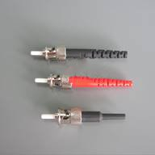

ST/UPC Fiber connector

ST/UPC
Optical communication equipment
Item |
Single mode |
Multi mode |
Insertion loss |
PC＜0.3dB |
PC＜0.3dB |
Return loss |
PC＞45dB |
PC＞25dB |
Insert-pull test |
1000 times ＜0.3dB |
|
Operating temperature |
-40℃ ~ +75℃ |
|
Ceramic ferrule spec |
125.5um concentricity deviations:＜1um |
127um concentricity deviations:＜3um |
Suitable fiber |
PC(9/125um) |
PC(50/125um,62.5/125um) |